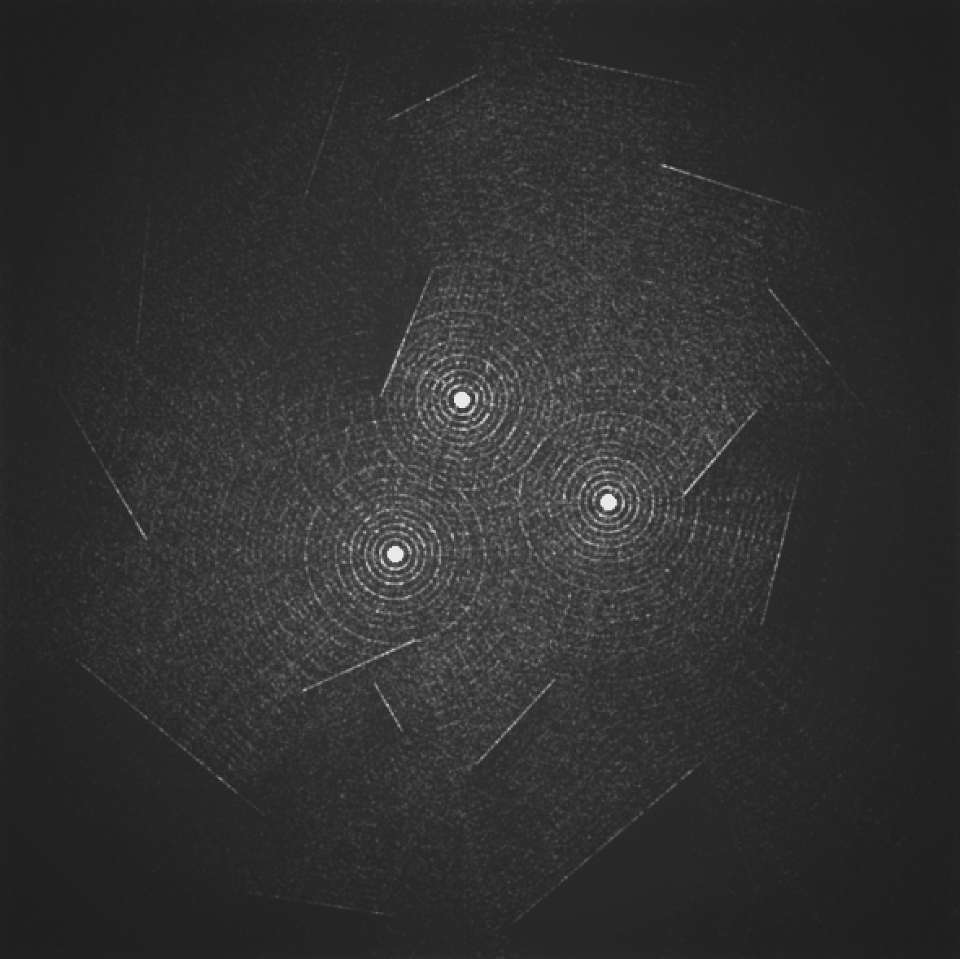
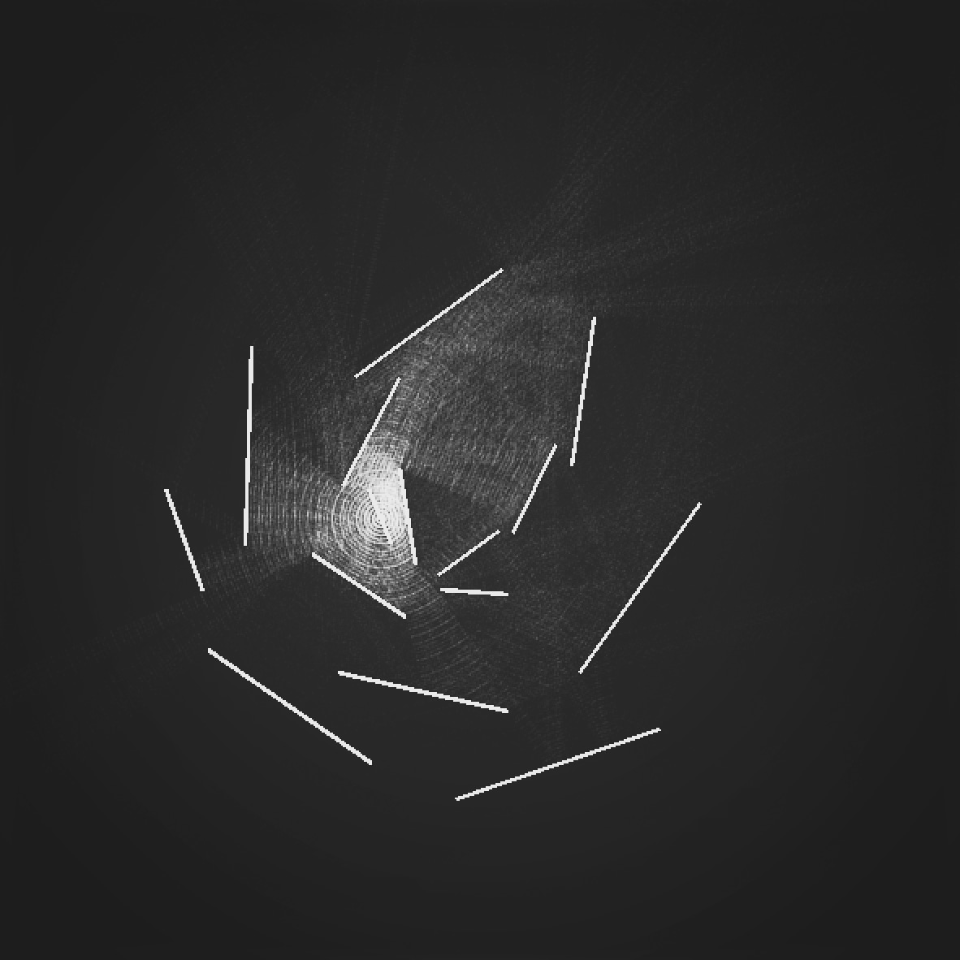

Ray Casting
First attempt at building a basic 2D ray caster. Heavily relies on code from an old bouncing ball sketch, I'll reimplement this with my own logic once I've developed the methods for the new ProcKt KVector class.

package prockt.sketches.archive
import prockt.KApplet
import processing.core.PVector
import prockt.api.Coord
/*
Raycaster
*/
class Sketch026: KApplet() {
private var mirrorStart: Coord? = null
private var mirrorEnd: Coord? = null
private var showObjects = false
private var setSpeed = false
private var mirrors = mutableListOf<Mirror>()
private var rays = mutableListOf<Ray>()
private var speed: Float = 275f
private var lights = mutableListOf<Coord>()
private var currTime: Int = 0
private var prevTime:Int = 0
private var deltaTime: Float = 0f
override fun settings() {
size(1000, 600, P3D)
//smooth(8)
super.settings()
}
override fun setup() {
reset()
hint(DISABLE_OPTIMIZED_STROKE)
blendMode(ADD)
}
override fun draw() {
if(showObjects){
reset()
mirrors.forEach { mirror ->
mirror.drawHighlight()
}
}
if(setSpeed){
speed = mouseY.toFloat()
}
currTime = millis()
deltaTime = (currTime - prevTime)/1000.0f
prevTime = currTime;
when {
mirrorStart != null -> {
if(!showObjects) reset()
stroke(MAGENTA)
line(mirrorStart!!, Coord(mouseX, mouseY))
}
}
lights.forEach {
rays.add(Ray(Coord(it.x, it.y), random(0f, TAU)))
noStroke()
fill(WHITE, 1)
circle(it, 4)
}
rays.forEach { ray ->
ray.update(deltaTime, mirrors)
ray.move(deltaTime)
ray.display()
}
}
override fun mousePressed() {
mirrorStart = Coord(mouseX, mouseY)
}
override fun mouseReleased() {
if(mirrorStart != null){
mirrorEnd = Coord(mouseX, mouseY)
mirrors.add(Mirror(mirrorStart!!, mirrorEnd!!))
mirrorStart = null
mirrorEnd = null
reset()
}
}
override fun keyPressed() {
when (key) {
's' -> {
setSpeed = !setSpeed
println("setSpeed: $setSpeed")
}
'o' -> {
showObjects = !showObjects
if(!showObjects) reset()
}
'r' -> {
lights.clear()
rays.clear()
mirrors.clear()
reset()
}
'l' -> {
println("Add light at $mouseX x $mouseY")
lights.add(Coord(mouseX, mouseY))
reset()
}
}
}
private fun reset(){
background(BLACK)
rays.clear()
}
inner class Ray(val origin: Coord, angle: Float){
var rayStrength = 8f
var position = PVector() // Position
var direction = PVector() // Direction (keep normalised)
var nextPos = PVector() // Position
var u = PVector()
var w = PVector()
init {
position.set(origin.x, origin.y)
direction.set(sin((angle)), cos((angle)))
direction.normalize()
nextPos.set(position)
}
private fun drawCollision(end: Coord) {
stroke(WHITE, rayStrength)
point(end.x, end.y)
}
fun display() {
stroke(WHITE, rayStrength)
point(position.x, position.y)
}
fun update(_dt: Float, mirrors: List<Mirror>?) {
var dt = _dt
if (position.x < 0 || position.x > width || position.y < 0 || position.y > height) {
rayStrength = -1f
return
}
nextPos.set(position)
nextPos.x += direction.x * speed * dt
nextPos.y += direction.y * speed * dt
if (mirrors != null) {
for (index in mirrors.indices) {
val mirror = mirrors[index]
val inter = line_line_p(position, nextPos, mirror.start, mirror.end) ?: continue
val timeToHit = PVector.dist(position, inter) / speed
dt -= timeToHit
position.set(inter)
nextPos.set(position)
//Direction change
u.set(mirror.normalVector)
u.mult(direction.dot(mirror.normalVector))
w.set(direction)
w.sub(u)
direction.set(w)
direction.sub(u)
speed *= direction.mag()
direction.normalize()
drawCollision(Coord.fromVector(position))
rayStrength -= 0.35f
origin.set(position.x, position.y)
}
}
}
fun move(dt: Float) {
position.add(direction.x * speed * dt, direction.y * speed * dt, 0f)
}
}
/**
* Find the point of intersection between two finite lines.
* This method uses PVector objects to represent the line end points.
* [x0, y0]-[x1, y1] start and end of the first line
* [x2, y2]-[x3, y3] start and end of the second line
* if the two lines are parallel then null is returned, otherwise the intercept
* position is returned.
*/
fun line_line_p(v0: PVector, v1: PVector, v2: Coord, v3: Coord): PVector? {
var intercept: PVector? = null
val f1 = v1.x - v0.x
val g1 = v1.y - v0.y
val f2 = v3.x - v2.x
val g2 = v3.y - v2.y
val f1g2 = f1 * g2
val f2g1 = f2 * g1
val det = f2g1 - f1g2
if (abs(det) < Int.MAX_VALUE) {
val s = (f2 * (v2.y - v0.y) - g2 * (v2.x - v0.x)) / det
val t = (f1 * (v2.y - v0.y) - g1 * (v2.x - v0.x)) / det
if (s in 0.0..1.0 && t >= 0 && t <= 1) {
intercept = PVector(v0.x + f1 * s, v0.y + g1 * s)
}
}
return intercept
}
inner class Mirror(val start: Coord, val end: Coord){
var normalVector = PVector()
init {
normalVector.x = -(end.y - start.y)
normalVector.y = end.x - start.x
normalVector.normalize()
}
fun draw(){
stroke(BLACK)
strokeWeight(2f)
line(start.x, start.y, end.x, end.y)
}
fun drawHighlight(){
stroke(MAGENTA)
strokeWeight(1f)
line(start.x, start.y, end.x, end.y)
}
}
}